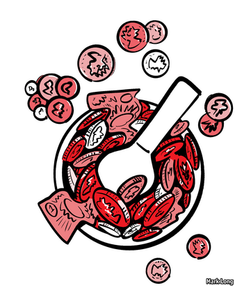
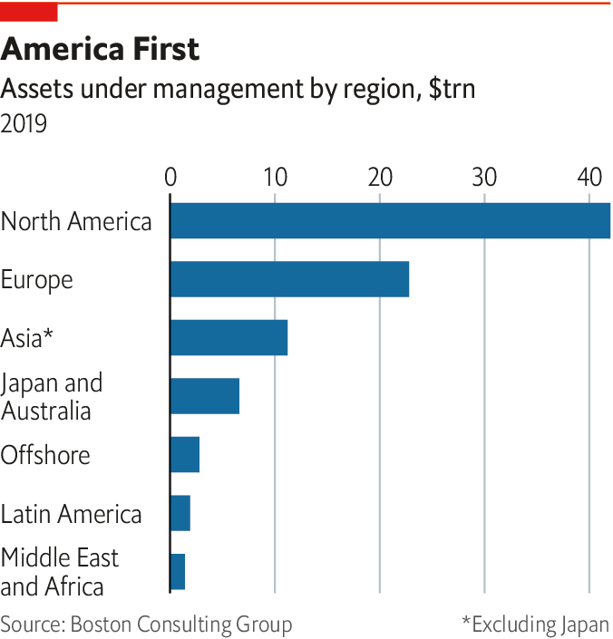
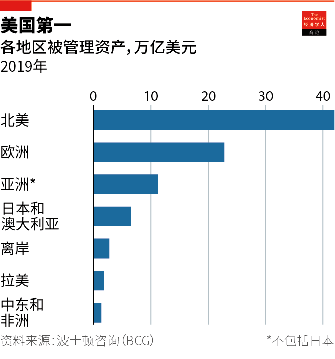

2020-11-30T15:08:13+00:00
China
中国
中國
The Shanghai Open
上海开市
上海開市
The future of finance is Chinese. But what will it look like?
金融的未来在中国。但它会是何模样？【专题报道《资产管理》系列之四】
金融的未來在中國。但它會是何模樣？【專題報道《資產管理》系列之四】

ASSET MANAGEMENT is mostly a rich-world affair. North America, Europe, Australia and Japan between them account for around three-quarters of assets under professional management. The United States is far and away the single most important market. America sets the tone for capital markets everywhere else. Global trading starts when New York opens.
资产管理这桩事主要存在于富裕世界。北美、欧洲、澳大利亚和日本总共占到全球受专业管理的资产总额的四分之三左右。美国作为最重要的市场遥遥领先，为其他地方的资本市场定下基调。纽约开市，全球交易开始新的一天。
資產管理這樁事主要存在於富裕世界。北美、歐洲、澳大利亞和日本總共佔到全球受專業管理的資產總額的四分之三左右。美國作為最重要的市場遙遙領先，為其他地方的資本市場定下基調。紐約開市，全球交易開始新的一天。
Yet just as London gave way to New York after economic supremacy passed from Britain to America, so it is not hard to imagine a future when the global trading day will begin in Shanghai. China already has the world’s second-largest economy. Its heft in global finance lags, but it is putting much effort into catching up. It has opened its mainland markets to foreign investors in shares and bonds. It is relaxing regulations to allow foreign asset managers to operate more freely. Asset management is growing faster in Asia than in the West. The industry’s balance of power is shifting inexorably. Time, size and momentum are on China’s side.
但是，正如经济霸权从英国传给美国之后，伦敦让位给了纽约那样，不难想象未来某天，全球交易日会从上海开始新一天。中国已经拥有世界第二大规模的经济。它在全球金融方面的势力落后于人，但正在付出巨大的努力追赶。它已经向外国投资者开放了中国大陆的股票和债券市场。它正在放宽监管以允许外国的资产管理公司更自由地运作。资产管理行业在亚洲的增速快过西方。该行业的力量平衡正在发生势不可挡的变化。时间、规模和势头如今都在中国这一边。
但是，正如經濟霸權從英國傳給美國之後，倫敦讓位給了紐約那樣，不難想象未來某天，全球交易日會從上海開始新一天。中國已經擁有世界第二大規模的經濟。它在全球金融方面的勢力落後於人，但正在付出巨大的努力追趕。它已經向外國投資者開放了中國大陸的股票和債券市場。它正在放寬監管以允許外國的資產管理公司更自由地運作。資產管理行業在亞洲的增速快過西方。該行業的力量平衡正在發生勢不可擋的變化。時間、規模和勢頭如今都在中國這一邊。
What is not clear is precisely how asset management will develop in China. No asset manager can offer a global service unless it has a footprint in China and across Asia. If you are selling Chinese equity or bond mutual funds to Western investors, you need people on the ground in China. The same business logic applies to selling global assets to Chinese investors, once outgoing capital controls are relaxed. The big prize—and the big unknown—is “local to local” ie, selling Chinese mutual funds to Chinese investors. And the competition for this prize looks wide open.
目前尚不清楚资产管理在中国到底将如何发展。在中国和亚洲没有既有业务的资产管理公司不能在这里提供全球服务。若你要把中国的股票或债券共同基金出售给西方投资者，就必须在中国境内派驻人员。相同的业务逻辑也适用于把全球资产出售给中国投资者——一旦对资本流出的管制放宽的话。而大奖——也是最大的未知数——是“本地对本地”，即向中国投资者出售中国的共同基金。对这个奖项的竞争目前看起来没有哪方有明显的优势，一切皆有可能。
目前尚不清楚資產管理在中國到底將如何發展。在中國和亞洲沒有既有業務的資產管理公司不能在這裡提供全球服務。若你要把中國的股票或債券共同基金出售給西方投資者，就必須在中國境內派駐人員。相同的業務邏輯也適用於把全球資產出售給中國投資者——一旦對資本流出的管制放寬的話。而大獎——也是最大的未知數——是“本地對本地”，即向中國投資者出售中國的共同基金。對這個獎項的競爭目前看起來沒有哪方有明顯的優勢，一切皆有可能。
China’s financial markets are immature. Much household wealth is on deposit in banks or tied up in homes. The commonest kinds of pooled investments resemble bank deposits: either money-market funds or “wealth-management products”, higher-yielding alternatives to bank deposits, which have a fixed term of a few months but are often used to finance long-term property projects. Stockmarket trading is dominated by retail investors, who trade directly in individual shares via brokerages. Only around a tenth of listed shares are owned through domestic mutual funds.
中国的金融市场还不成熟。大量的家庭财富放在银行存款里或被束缚在房产上。最常见的汇集投资和银行存款类似：货币市场基金或“理财产品”，它们是比存银行收益更高些的替代方案，有几个月的固定期限，但经常被用于为长期房地产项目融资。股市交易由散户主导，他们通过券商直接买卖单只股票。通过国内共同基金持有的上市股份仅占约十分之一。
中國的金融市場還不成熟。大量的家庭財富放在銀行存款里或被束縛在房產上。最常見的彙集投資和銀行存款類似：貨幣市場基金或“理財產品”，它們是比存銀行收益更高些的替代方案，有幾個月的固定期限，但經常被用於為長期房地產項目融資。股市交易由散戶主導，他們通過券商直接買賣單只股票。通過國內共同基金持有的上市股份僅占約十分之一。
China’s stockmarket has a very high churn rate. But the market is becoming more institutionalised. Mostly this reflects buying by foreigners, following the inclusion of a selection of shares and bonds listed on China’s mainland markets in the benchmark indices compiled by MSCI and Bloomberg Barclays. The hope is that China’s domestic market will also come under the stabilising sway of asset managers.
中国股市的客户更迭率非常高。但这个市场正变得更制度化。这主要是外国人加入购买的结果——此前摩根斯坦利国际资本指数（MSCI）和彭博巴克莱指数（Bloomberg Barclays）将一批中国大陆市场股票和债券纳入其基准指数中。中国的国内市场也有望受到资产管理公司这股稳定性力量的影响。
中國股市的客戶更迭率非常高。但這個市場正變得更制度化。這主要是外國人加入購買的結果——此前摩根斯坦利國際資本指數（MSCI）和彭博巴克萊指數（Bloomberg Barclays）將一批中國大陸市場股票和債券納入其基準指數中。中國的國內市場也有望受到資產管理公司這股穩定性力量的影響。
If it does, it is an enticing fee pool. As China gets richer, households are likely to change their mix of wealth: less in bank deposits and wealth-management products (which regulators are keen to kill off for reasons of financial stability); more in traded securities, such as shares and bonds. More of those securities, it is hoped, will be held in diversified mutual funds, managed by professionals for a fee. Pension funds will mushroom. GDP is likely to continue to grow faster than in rich countries. A bigger economy implies more savings to be deployed—and more securities to be issued, by both companies and the government.
若真如此，那将带来诱人的佣金收益。随着中国变得更富裕，中国家庭很可能会改变财富组合：减少银行存款和理财产品（监管机构出于金融稳定性的考虑迫切想要喊停这类产品）；增加投资股票和债券等可交易证券。业界希望这些证券将更多地由多元化的共同基金持有，由专业人士收费管理。养老基金规模会迅速扩大。中国的GDP增速很可能会继续超过富裕国家。经济规模更大意味有更多的储蓄可供配置，而企业和政府都会发行更多证券。
若真如此，那將帶來誘人的佣金收益。隨着中國變得更富裕，中國家庭很可能會改變財富組合：減少銀行存款和理財產品（監管機構出於金融穩定性的考慮迫切想要喊停這類產品）；增加投資股票和債券等可交易證券。業界希望這些證券將更多地由多元化的共同基金持有，由專業人士收費管理。養老基金規模會迅速擴大。中國的GDP增速很可能會繼續超過富裕國家。經濟規模更大意味有更多的儲蓄可供配置，而企業和政府都會發行更多證券。
In short, managed assets will continue to grow faster in China. For active asset managers, it is a dream. Their concern is that fee revenue in America and Europe is diminishing, or at least cannot grow much further. China offers a new frontier. “These are very big and liquid markets that are also inefficient,” says the boss of one European fund. Many of the same conditions are found in other parts of emerging Asia. A secular fall in inflation in India, the other Asian giant, has encouraged the well-off out of inflation hedges like gold and property into the stockmarket.
简言之，中国被管理的资产规模将继续加速增长。对于主动资产管理者来说这真是太棒了。他们担心美欧的佣金收入在减少，或者至少无法再增长很多。中国提供了一片新天地。一家欧洲基金的老板说：“这些市场很大，流动性很高，效率却很低下。”在新兴亚洲的其他地区也发现了许多相同的情形。在另一个亚洲大国印度，通胀长期下降鼓励了富人们从黄金和房地产等对冲通胀的投资转向股市。
簡言之，中國被管理的資產規模將繼續加速增長。對於主動資產管理者來說這真是太棒了。他們擔心美歐的傭金收入在減少，或者至少無法再增長很多。中國提供了一片新天地。一家歐洲基金的老闆說：“這些市場很大，流動性很高，效率卻很低下。”在新興亞洲的其他地區也發現了許多相同的情形。在另一個亞洲大國印度，通脹長期下降鼓勵了富人們從黃金和房地產等對沖通脹的投資轉向股市。
China appears to want to graduate from a rickety system in which state-backed banks decide who gets capital. Its regulators plan to establish a professional class of asset allocators. They see foreign involvement as a means to this goal. Since 2018 foreign firms have been allowed to take majority stakes in asset-management joint ventures with domestic banks. From April this year, they have been permitted to set up wholly owned subsidiaries in China. Within days of this rule change, JP Morgan Asset Management paid $1bn to buy out its minority partner. Others are moving to take advantage of China’s opening up. Still, most Chinese asset managers have foreign partners. The foreigners bring with them expertise in building portfolios, trading, research, investment process, record-keeping and the management of highly skilled teams. Their partners bring customers and local know-how.
中国看起来想要终结由国有银行决定谁获得资本的不稳固的体系。其监管机构计划建立一个资产配置者的专业阶层。它们认为外国参与是实现这个目标的手段之一。自2018年以来，外国公司被允许在其与国内银行的资产管理合资企业中持有多数股权。从今年4月开始，它们被允许在中国设立全资子公司。在这项新规发布后的几天内，摩根资产管理（JP Morgan Asset Management）就斥资10亿美元收购了其少数股东合资伙伴。其他外国公司也行动起来，争取抓住中国开始开放的机遇。不过，大多数的中国资产管理公司有外国合伙人。外国人带来了在打造投资组合、交易、研究、投资程序、交易记录和管理高技能团队方面的专业知识。本地合作伙伴则带来了客户和当地的门道。
中國看起來想要終結由國有銀行決定誰獲得資本的不穩固的體系。其監管機構計劃建立一個資產配置者的專業階層。它們認為外國參與是實現這個目標的手段之一。自2018年以來，外國公司被允許在其與國內銀行的資產管理合資企業中持有多數股權。從今年4月開始，它們被允許在中國設立全資子公司。在這項新規發布後的幾天內，摩根資產管理（JP Morgan Asset Management）就斥資10億美元收購了其少數股東合資夥伴。其他外國公司也行動起來，爭取抓住中國開始開放的機遇。不過，大多數的中國資產管理公司有外國合伙人。外國人帶來了在打造投資組合、交易、研究、投資程序、交易記錄和管理高技能團隊方面的專業知識。本地合作夥伴則帶來了客戶和當地的門道。
Everyone thinks that China will be a big deal. But industry bosses are not confident about how things will shake out in practice. There are broadly three areas of uncertainty. The first is how to acquire customers. Some of the world’s biggest asset managers became that way partly from having a captive market. They are often offshoots of insurance companies, retail banks or investment banks. A foreign asset manager with no brand in China needs to find another way to build the business. For some a tie-up with a local bank is a good fit. Amundi is an offshoot of two European banks, Crédit Agricole and Société Générale, from whose customer base they have built a formidable market share in France. It has a joint venture with Agricultural Bank of China and another with Bank of China. These are lenders with hundreds of millions of customers. It also has a joint venture with State Bank of India, the country’s largest commercial bank. From such strongholds, Amundi has accumulated an asset base of €300bn across Asia.
所有人都认为中国将会非常重要。但业界老板们对事情实际会发展成什么样却心里没底。不确定性大致可以分成三个方面。首先是如何获得客户。世界上最大的一批资产管理公司之所以能实现这样的规模，一定程度上是因为它们拥有某种垄断市场。它们通常是保险公司、零售银行或投资银行的分支机构。一家在中国没有品牌的外国资产管理公司需要找到另一种方式来打开市场。对一些公司来说，和本地银行合作是一个不错的选择。东方汇理（Amundi）源自于两家欧洲银行——法国农业信贷银行（Crédit Agricole）和法国兴业银行（Société Générale），通过这两家银行的客户基础在法国建立了令人生畏的市场份额。它与拥有几亿客户的中国农业银行和中国银行分别成立了合资企业。它还和印度最大的商业银行印度国家银行建立了合资企业。通过这些据点，东方汇理已在亚洲各地累积起3000亿欧元的资产基础。
所有人都認為中國將會非常重要。但業界老闆們對事情實際會發展成什麼樣卻心裡沒底。不確定性大致可以分成三個方面。首先是如何獲得客戶。世界上最大的一批資產管理公司之所以能實現這樣的規模，一定程度上是因為它們擁有某種壟斷市場。它們通常是保險公司、零售銀行或投資銀行的分支機構。一家在中國沒有品牌的外國資產管理公司需要找到另一種方式來打開市場。對一些公司來說，和本地銀行合作是一個不錯的選擇。東方匯理（Amundi）源自於兩家歐洲銀行——法國農業信貸銀行（Crédit Agricole）和法國興業銀行（Société Générale），通過這兩家銀行的客戶基礎在法國建立了令人生畏的市場份額。它與擁有幾億客戶的中國農業銀行和中國銀行分別成立了合資企業。它還和印度最大的商業銀行印度國家銀行建立了合資企業。通過這些據點，東方匯理已在亞洲各地累積起3000億歐元的資產基礎。
But banks are not the only money doctors in China. Some rich-world equity funds have emerged out of life-insurance businesses. They essentially sold equity risk under the guise of an insurance product. Something similar might yet happen in China. China Life, for instance, has a sales force of 1.8m. The two tech giants, Alibaba and Tencent, have mobile-payment platforms that are widely used and trusted. These are potential launching pads for asset-management businesses.
但银行不是中国唯一一批财务医生。一些富裕世界的股票基金已出现在人寿保险业务中。它们本质上是以保险产品的名义出售证券风险。在中国也可能会发生类似的事情。例如，中国人寿拥有180万名销售人员。两大科技巨头阿里巴巴和腾讯拥有被广泛使用和信任的移动支付平台。这些都可能是资产管理业务的“发射平台”。
但銀行不是中國唯一一批財務醫生。一些富裕世界的股票基金已出現在人壽保險業務中。它們本質上是以保險產品的名義出售證券風險。在中國也可能會發生類似的事情。例如，中國人壽擁有180萬名銷售人員。兩大科技巨頭阿里巴巴和騰訊擁有被廣泛使用和信任的移動支付平台。這些都可能是資產管理業務的“發射平台”。
Very big, China
非常大，中国
非常大，中國
In 2013 Ant Group, an offshoot of Alibaba, created a fund for its customers to invest the cash piling up in their Alipay mobile-payment accounts. Within a few years it was the world’s largest money-market fund. Vanguard now has a joint venture with Ant Group to offer investment advice. It signed up 200,000 clients in its first 100 days. The choice of distribution channel hinges on whom Chinese investors will ultimately trust. It is not mostly a matter of technology. “People make a distinction between tech platforms and bank networks,” says Yves Perrier, chief executive of Amundi. “But it is a false distinction because the way we bank in France is both human and digital.”
阿里巴巴的分支机构蚂蚁集团在2013年创建了一笔基金，让用户把他们的支付宝移动支付帐户中的余额拿来投资。几年内它就发展成了全球最大的货币市场基金。先锋集团（Vanguard）已与蚂蚁成立了一家提供投资咨询的合资企业。这家公司在开张的100天内就签下了20万名客户。分销渠道的选择取决于中国投资者最终会信任谁。这主要并不是一个技术问题。“人们会把技术平台和银行网络区分开来，”东方汇理的首席执行官伊夫·佩里耶（Yves Perrier）说，“但这是一种错误的划分，因为我们在法国做金融的方式既人性化又数字化。”
阿里巴巴的分支機構螞蟻集團在2013年創建了一筆基金，讓用戶把他們的支付寶移動支付帳戶中的餘額拿來投資。幾年內它就發展成了全球最大的貨幣市場基金。先鋒集團（Vanguard）已與螞蟻成立了一家提供投資諮詢的合資企業。這家公司在開張的100天內就簽下了20萬名客戶。分銷渠道的選擇取決於中國投資者最終會信任誰。這主要並不是一個技術問題。“人們會把技術平台和銀行網絡區分開來，”東方匯理的首席執行官伊夫·佩里耶（Yves Perrier）說，“但這是一種錯誤的劃分，因為我們在法國做金融的方式既人性化又數字化。”
A second uncertainty is how the industry in China will evolve. The bet is that it will become more like America, a market in which mutual funds have the muscle. But there is no guarantee of this. Indeed, in recent months America’s stockmarket has looked a lot like China’s: retail-led, noisy and informed by social-media fads and a gambling mentality. China’s market might stay that way. Or the market for pooled investments might be swiftly captured by index and other kinds of low-cost products.
第二个不确定性是中国的这个行业会如何演变。它很可能会变得更像美国，共同基金在市场中具有强大的影响力。但这一点无法保证。实际上，近几个月来美国的股市和中国的很像：散户主导、充满噪音、受社交媒体上的风向和赌徒心理的影响。中国的市场可能会继续处于这种状态。又或者，汇集投资市场可能会被指数和其他类型的低成本产品迅速占领。
第二個不確定性是中國的這個行業會如何演變。它很可能會變得更像美國，共同基金在市場中具有強大的影響力。但這一點無法保證。實際上，近幾個月來美國的股市和中國的很像：散戶主導、充滿噪音、受社交媒體上的風向和賭徒心理的影響。中國的市場可能會繼續處於這種狀態。又或者，彙集投資市場可能會被指數和其他類型的低成本產品迅速佔領。
A third source of uncertainty is policy in China. It is friendly now, but might not always be. “With distribution-driven JVs, sometimes you lose control of the factory,” warns one industry bigwig. That is not the only risk. The prospect of selling rich-world securities to Chinese investors depends on China allowing capital to flow freely outwards. It has been loth to do this because it would mean ceding greater control of the yuan to market forces. China may balk at further opening up. A bigger question lies behind this. One industry executive puts it bluntly: “How serious is it about allowing people to make money?”
第三个不确定性源头是中国的政策。它目前是友好的，但不一定总如此。一位行业大佬警告说：“成立分销驱动的合资企业，有时你会失去对工厂的控制权。”这不是唯一的风险。向中国投资者出售富裕国家证券的前景有赖于中国允许资本自由流出。中国一直很不乐意这么做，因为这意味着把人民币的控制权更多交给市场力量。中国可能对进一步开放犹疑不决。这背后有一个更大的问题。一位行业高管直言：“它对于让大家赚钱这事是认真的吗？”
第三個不確定性源頭是中國的政策。它目前是友好的，但不一定總如此。一位行業大佬警告說：“成立分銷驅動的合資企業，有時你會失去對工廠的控制權。”這不是唯一的風險。向中國投資者出售富裕國家證券的前景有賴於中國允許資本自由流出。中國一直很不樂意這麼做，因為這意味着把人民幣的控制權更多交給市場力量。中國可能對進一步開放猶疑不決。這背後有一個更大的問題。一位行業高管直言：“它對於讓大家賺錢這事是認真的嗎？”
Perhaps the trade-and-technology wars will make China inhospitable to American asset managers. Perhaps Europe has an advantage. If Shanghai is to follow London and New York, the yuan must become freely convertible. China has to be open. But economic and financial hegemony may be expressed differently. “Will we make money? We haven’t a clue,” says the executive. But like many of his peers, he sees China as a low-stakes bet with a potentially large payoff. “We still need to be there,” he says. “So we are there.”■
或许贸易战和科技战会使得中国不欢迎美国的资产管理公司。或许欧洲有优势。如果上海要追赶伦敦和纽约，那么人民币必须能够自由兑换。中国必须要开放。但经济和金融霸权也可能以不同的方式展现。“我们会赚钱吗？我们毫无头绪。”这位高管说。但是，与许多同业一样，他视中国为一个低风险却有潜在高收益的赌注。“我们仍然需要在那儿，”他说，“所以我们在那儿。”
或許貿易戰和科技戰會使得中國不歡迎美國的資產管理公司。或許歐洲有優勢。如果上海要追趕倫敦和紐約，那麼人民幣必須能夠自由兌換。中國必須要開放。但經濟和金融霸權也可能以不同的方式展現。“我們會賺錢嗎？我們毫無頭緒。”這位高管說。但是，與許多同業一樣，他視中國為一個低風險卻有潛在高收益的賭注。“我們仍然需要在那兒，”他說，“所以我們在那兒。”